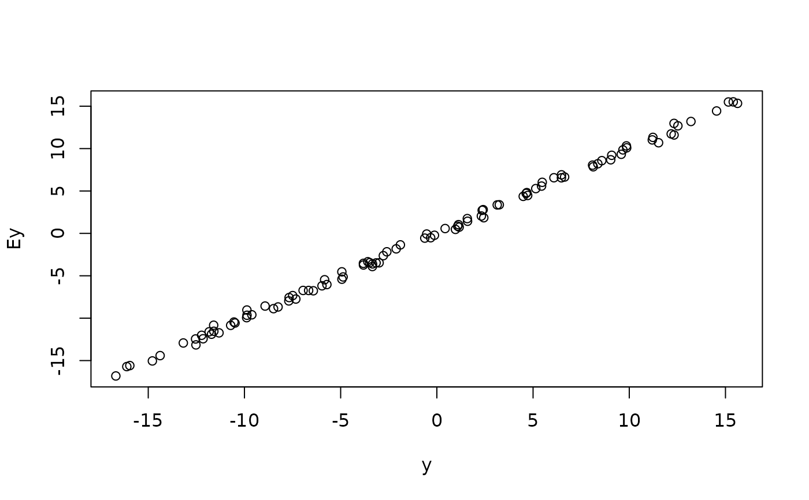

Expected value of a given function for maxlogLreg models.
Source: R/expected_value.R
expected_value.maxlogL.Rd![[Experimental]](figures/lifecycle-experimental.svg)
This function takes a maxlogL model and computes the expected value
using the estimated parameters. The expected value is computed using the
following expression
$$\hat{E[g(X)]} = \int_{-\infty}^{\infty} f(x|\hat{\theta}) dx,$$
where \(f(x|\hat{\theta})\) is a probability density function using the estimated parameters.
Arguments
- object
an object of
maxlogLclass obtained by fitting a model withmaxlogLreg.- g
a given function \(g(x)\).
- routine
a character specifying the integration routine.
integrateandgauss_quadare available for continuous distributions, andsummatefor discrete ones. Custom routines can be defined but they must be compatible with theintegrationAPI.- ...
further arguments for the integration routine.
Value
the expected value of the fitted model corresponding to the
distribution specified in the y_dist argument of
maxlogLreg.
See also
Other maxlogL:
maxlogLreg(),
maxlogL()
Author
Jaime Mosquera Gutiérrez, jmosquerag@unal.edu.co
Examples
library(EstimationTools)
#----------------------------------------------------------------------------
# Example 1: mean value of a estimated model.
n <- 100
x <- runif(n = n, -5, 6)
y <- rnorm(n = n, mean = -2 + 3 * x, sd = 0.3)
norm_data <- data.frame(y = y, x = x)
formulas <- list(sd.fo = ~ 1, mean.fo = ~ x)
support <- list(interval = c(-Inf, Inf), type = "continuous")
norm_mod_maxlogL <- maxlogLreg(
formulas, y_dist = y ~ dnorm,
support = support,
data = norm_data,
link = list(over = "sd", fun = "log_link")
)
# Actual y values
y <- norm_mod_maxlogL$outputs$response
# Expected value
Ey <- expected_value.maxlogL(
object = norm_mod_maxlogL,
routine = "monte-carlo"
)
# Compare
plot(y, Ey)

#----------------------------------------------------------------------------